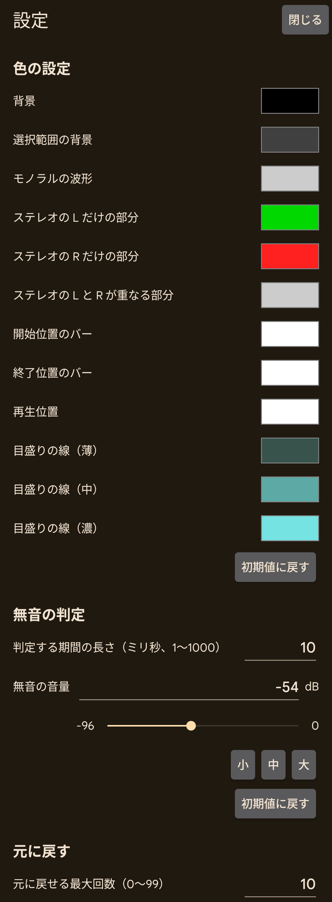
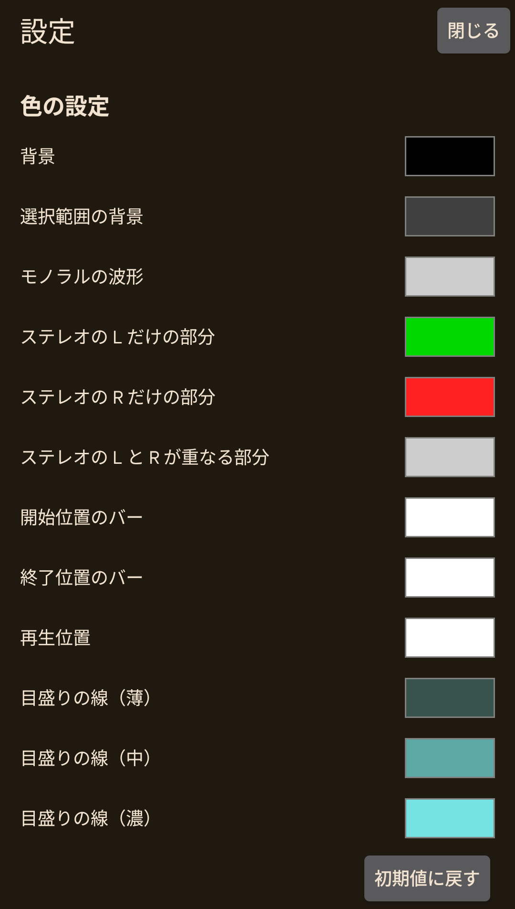
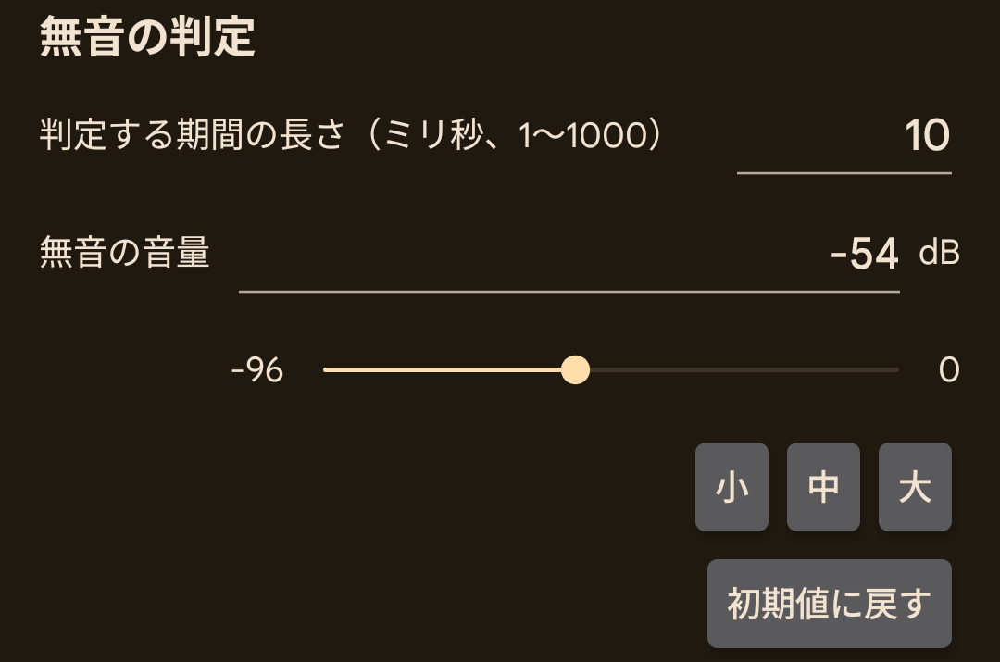
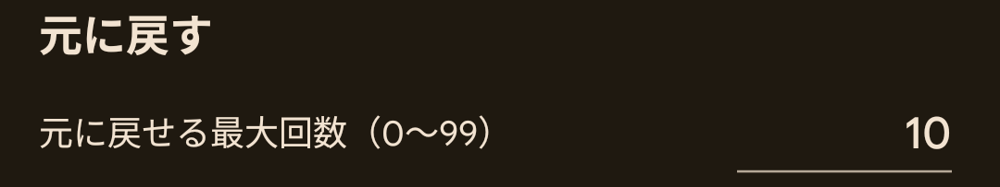

設定画面
メイン画面左上のメニューボタン（≡）から「設定」を選ぶと設定画面が開きます（再生中の場合は自動停止します）。
設定は変更すると自動的に保存・反映されます（保存ボタンはありません）。画面上部の 閉じる ボタン、または端末の戻るボタンでメイン画面に戻ります。
設定画面全体のスクリーンショットを表示

色の設定
波形ビューおよび再生ビューに描かれる各要素の色をカスタマイズできます。設定は両ビューで共通です（また、ステレオの L / R の色は上部バーの L / R スイッチの色にも連動します）。

| 項目 | 初期値 |
|---|---|
| 背景 | 黒 |
| 選択範囲の背景 | グレー |
| モノラルの波形 | やや輝度を下げた白 |
| ステレオの L だけの部分 | 緑 |
| ステレオの R だけの部分 | 赤 |
| ステレオの L と R が重なる部分 | やや輝度を下げた白 |
| 開始位置のバー | 最大輝度の白 |
| 終了位置のバー | 最大輝度の白 |
| 再生位置 | 最大輝度の白 |
| 目盛りの線（薄） | #7FFFFF（不透明度 A=64） |
| 目盛りの線（中） | #7FFFFF（不透明度 A=160） |
| 目盛りの線（濃） | #7FFFFF（不透明度 A=224、0 レベル水平線・時刻文字と共通） |
- カラーピッカー：各項目の行をタップするとカラーピッカーが開き、R・G・B・A（0〜255）をスライダーまたは数値入力で調整できます。変更はその場で反映されます。
- 初期値に戻す：「色の設定」にある 初期値に戻す ボタンを押すと、すべての色設定を確認なしで初期値に戻します。
無音の判定
「選択」グループの「無音区間を選択」「発音区間を選択」で使う無音判定の条件を設定します。

- 判定する期間の長さ（ミリ秒、1〜1000）：無音が続いているとみなす期間の長さです（初期値：
10ミリ秒）。 - 無音の音量：無音とみなす振幅のしきい値です（範囲：
-96〜0dB、初期値：-54dB）。小数での数値入力、1 dB 刻みのスライダー、または下のプリセットボタンで設定できます。
| プリセットボタン | 値（dB） | 目安の振幅（16 ビット） |
|---|---|---|
| 小 | -66 dB |
約 32 |
| 中（初期値） | -54 dB |
約 128 |
| 大 | -42 dB |
約 512 |
「無音の判定」にある 初期値に戻す ボタンを押すと、期間の長さ（10 ミリ秒）と無音の音量（-54.0 dB）を確認なしで初期値に戻します。
元に戻す

- 元に戻せる最大回数（0〜99）：「アンドゥ」グループで記憶する編集履歴の最大件数です（初期値：
10）。 0を指定すると履歴を保存しなくなるため、長い音声でメモリが不足して編集できないときの回避策としても利用できます。- 現在保持している履歴数より小さい値に変更した場合は、超過した古い履歴がその場で削除されます。
数値入力の反映タイミング：「判定する期間の長さ」「無音の音量」「元に戻せる最大回数」の数値入力欄は、キーボードの確定を押したとき・別の場所へ移動したとき・設定画面を閉じたときに反映されます。範囲外の値や空欄のまま確定した場合は、元の設定値に戻ります。